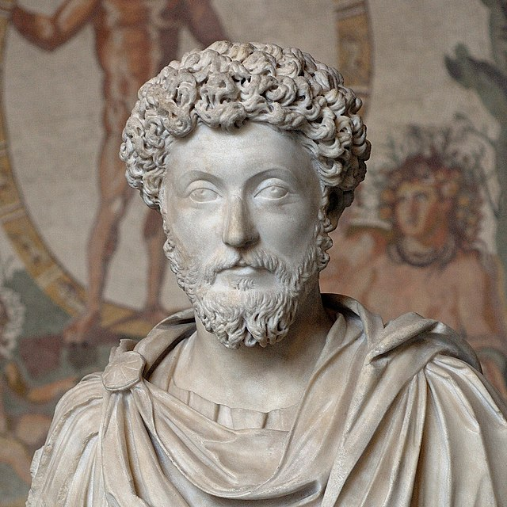

MEDITATIONS
REVIEW
Aurelius used to own the world. Back when the Roman Empire dominated a staggering percentage of available land mass, Aurelius was at the head. He fought wars, studied philosophy, watched over his kingdom, and watched even more carefully over himself. And lucky for you— he wrote his musings on life in a journal. Learning about stoicism (the philosophy central to this book) I realized that without knowing it, I’ve actually been living a pretty stoic life. In fact, I can see a lot of my reactions to life obstacles as having a stoic nature to them. This, I believe, is what’s helped me push through a lot of these circumstances and come out on top both in business and life in general. This is also why I feel this book — and stoicism in general — could be massively beneficial to you in your own struggle
There’s a lot more in the book than the three themes above. What I love, is how naturally his thoughts apply to business and active living (living life as opposed to letting life live you). While I appreciate you coming here and learning from me, I wholly recommend you take a few hours to learn from Aurelius. Again, this man used to own the “civilized” world. His humility, self-accountability, and reasoned approach to difficulty is inspiring. Pick up the book, learn a little about stoicism, and let me know what you think in the comments below. If you’ve already read through the book, tell me how it influenced your own life. P.S. There are a lot of translations of the book, but I would recommend this version. A lot of the other ones are written in hard to understand old english.
QUOTES
“You have power over your mind - not outside events. Realize this, and you will find strength.”
“Dwell on the beauty of life. Watch the stars, and see yourself running with them.”
“If someone is able to show me that what I think or do is not right, I will happily change, for I seek the truth, by which no one was ever truly harmed. It is the person who continues in his self-deception and ignorance who is harmed.”
- Marcus Aurelius
Author
Marcus Aurelius Antoninus was Roman emperor from 161 to 180 and a Stoic philosopher. He was the last of the rulers known as the Five Good Emperors , and the last emperor of the Pax Romana, an age of relative peace and stability for the Roman Empire lasting from 27 BCE to 180 CE. He served as Roman consul in 140, 145, and 161.Marcus was born during the reign of Hadrian to the emperor's nephew, the praetor Marcus Annius Verus, and the heiress Domitia Calvilla. His father died when he was three, and his mother and grandfather raised him.